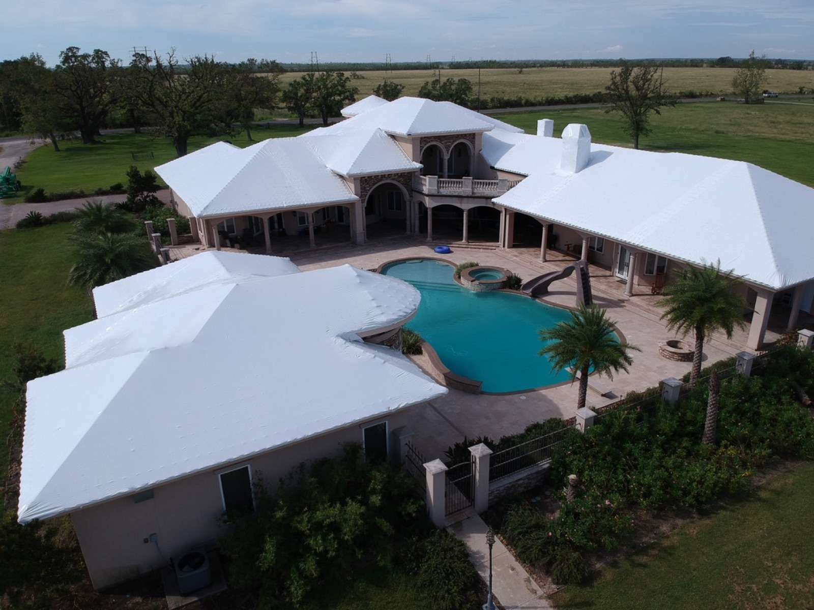
Emergency roof tarping
Rapid response roof leak protection after hurricanes, hail, and fallen trees. We seal the structure before the next band of rain, not after it.
Titanium Tarps is emergency roof protection engineered past the blue tarp. A Class-A fire-rated shrink wrap membrane we manufacture in-house and install wherever a hurricane, fire, or roof leak leaves a building open. One call, one crew, sealed until you rebuild.
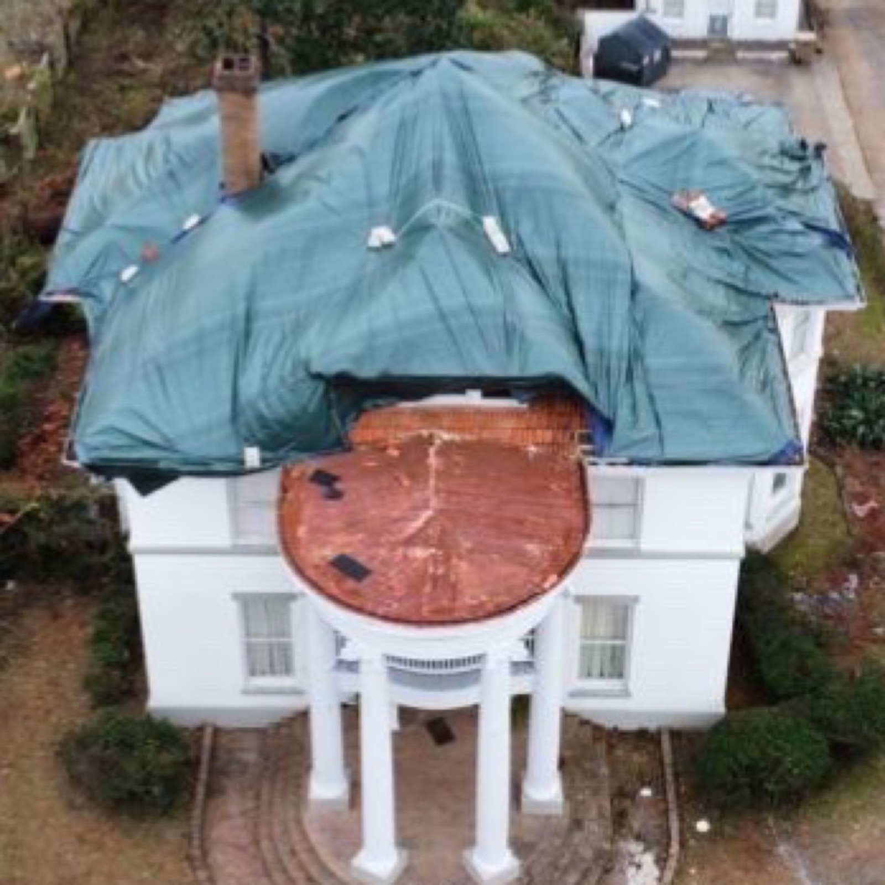
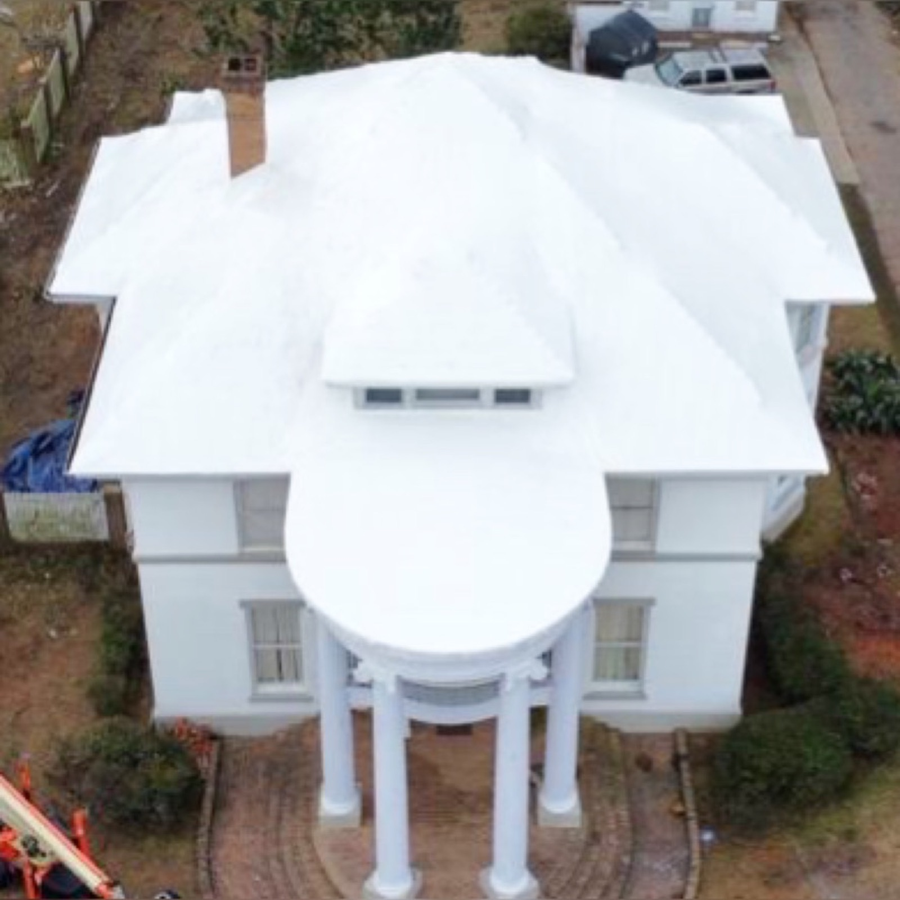
A blue tarp is a 90-day product on a 12-month problem. It flaps, tears, and leaks long before the rebuild starts, and every re-tarp is another bill and another round of water through your ceilings. Titanium Tarps heat-seals a tensioned membrane to the structure, so the building stays dry from the day of the loss to the last day of restoration.
Tarp it once. Stay sealed until the new roof is on.

What we do
From a single family home with a roof leak to a stadium canopy, the system is the same. Our film, our crews, our method, sealed watertight and documented for your claim.

Rapid response roof leak protection after hurricanes, hail, and fallen trees. We seal the structure before the next band of rain, not after it.
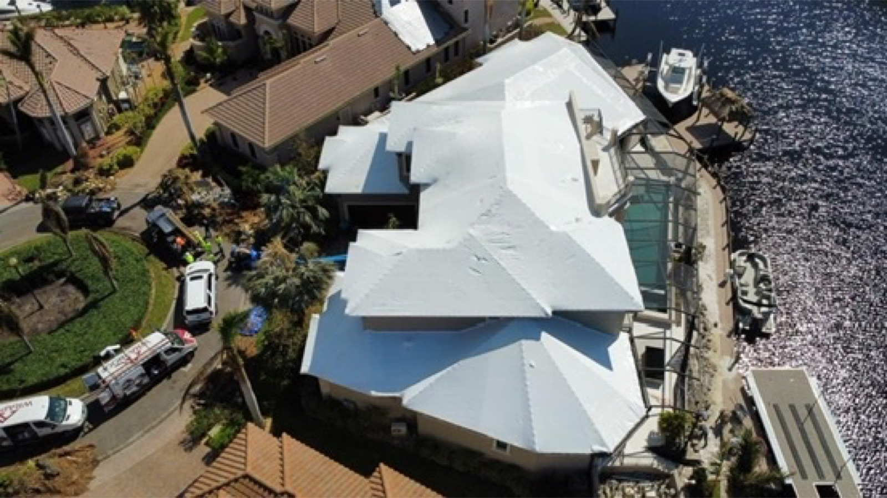
A heat-welded, drum-tight membrane that performs like a temporary roof system, not a tarp. Rated for up to 24 months of exposure.

Campus-scale response for communities, churches, schools, and property portfolios after a named storm. One crew, every building documented.
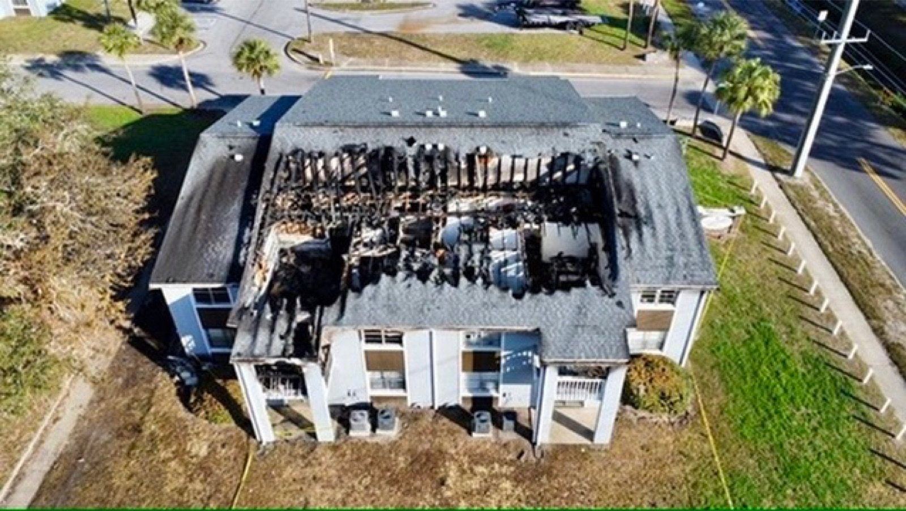
After the fire is out, the rain starts. We cap burned roof structures to stop water intrusion while investigation and restoration proceed.

Warehouses, plants, restaurants, and offices sealed and back in business while the permanent roof is engineered and permitted.

Weather enclosure for open floor plates and delayed glazing on active vertical projects. Meet the construction division.
Before & after


The membrane
One film, developed from scratch with leading shrink-film scientists and proven on real structures. Six tested properties that matter on a damaged roof.
Attachment and wind warranties set per project based on the structure and the enclosure scope.
Why Titanium Tarps
Titanium Tarps is not a reseller. We run our own production, so the membrane on your building is consistent, Class-A fire rated, and available when the forecast turns, anywhere in the hemisphere. No back-order stalls your cover after a disaster.
Crews deploy from Miami across North America, South America, and the Caribbean islands. Installers, equipment, and film travel as one unit, staged while the storm is still tracking, on your roof while local supply shelves are still empty.
Our attachment method, self-tapping vents, and furring system are engineered in-house and installed only by our crews. There is no off-brand equivalent. The product, the method, and the performance travel together on every job.
The construction division
For general contractors and developers, an open floor plate is a liability the forecast will exploit. Our construction division closes in vertical projects: perimeter weather enclosure, deck protection, debris containment, and delayed-glazing floors sealed so interior trades keep working. Proven at stadium scale.
Where we work
Based in Miami, Florida, built to travel. Hurricanes on the Gulf, ice storms in the Northeast, wildfire recovery in the West, cyclone season in the islands. If a truck, a ship, or a plane can reach it, so can our crews and our film.
On the board
Every install is finished drum-tight and photographed by drone, proof for your adjuster and your board that the building is protected.

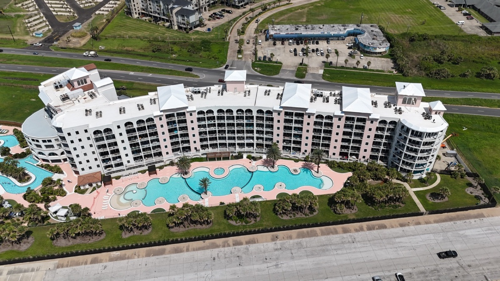
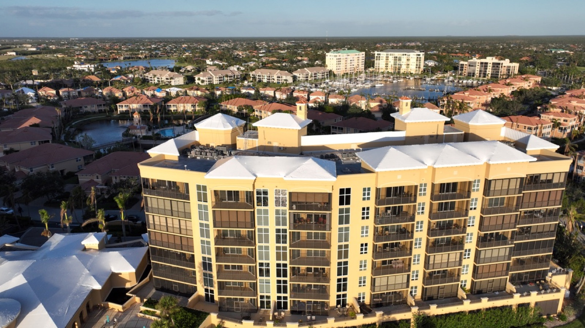
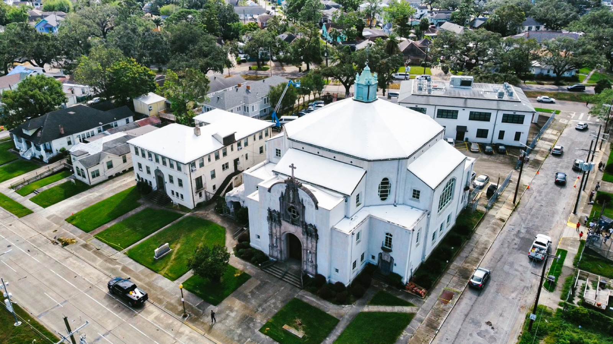

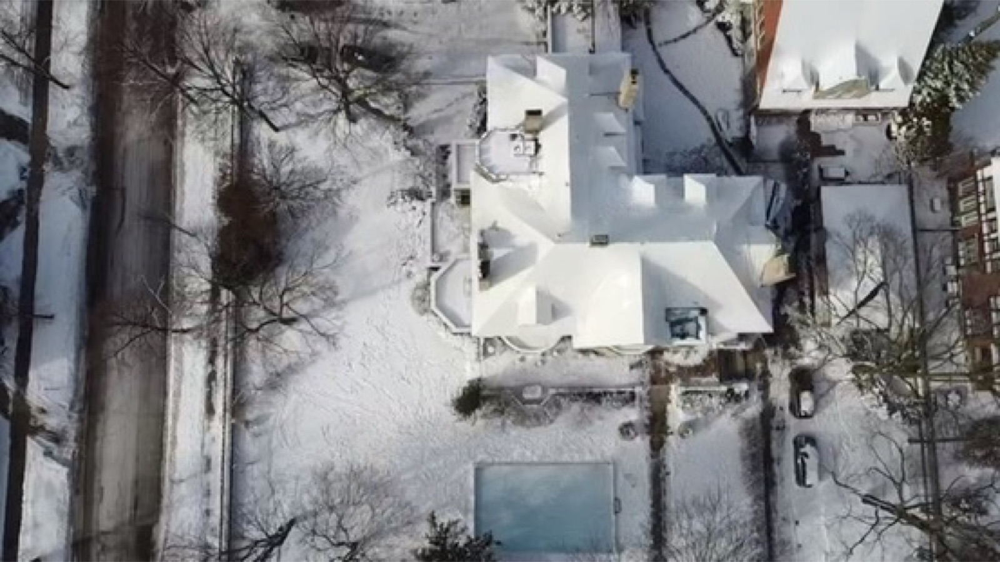
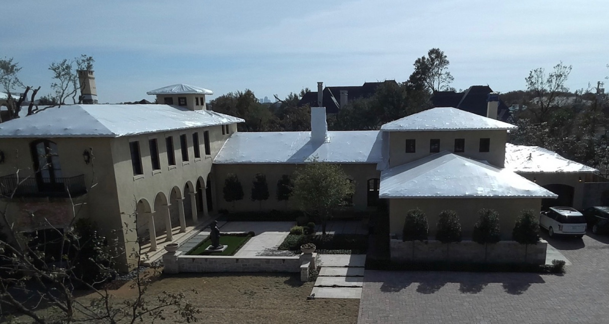
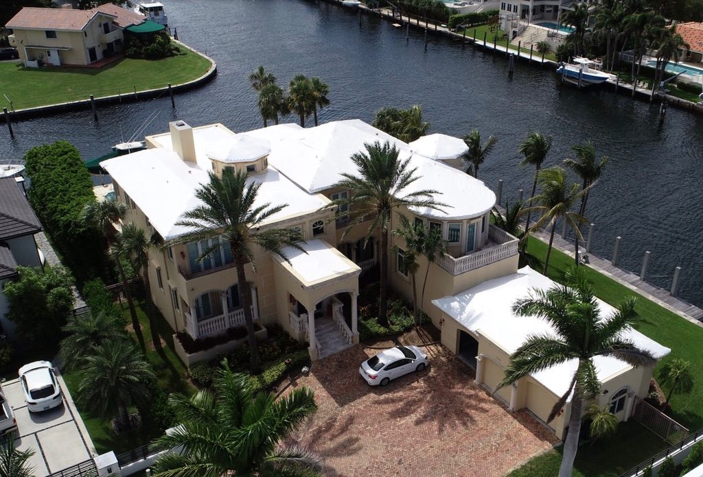
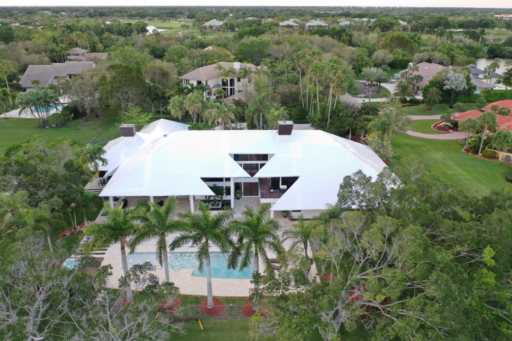
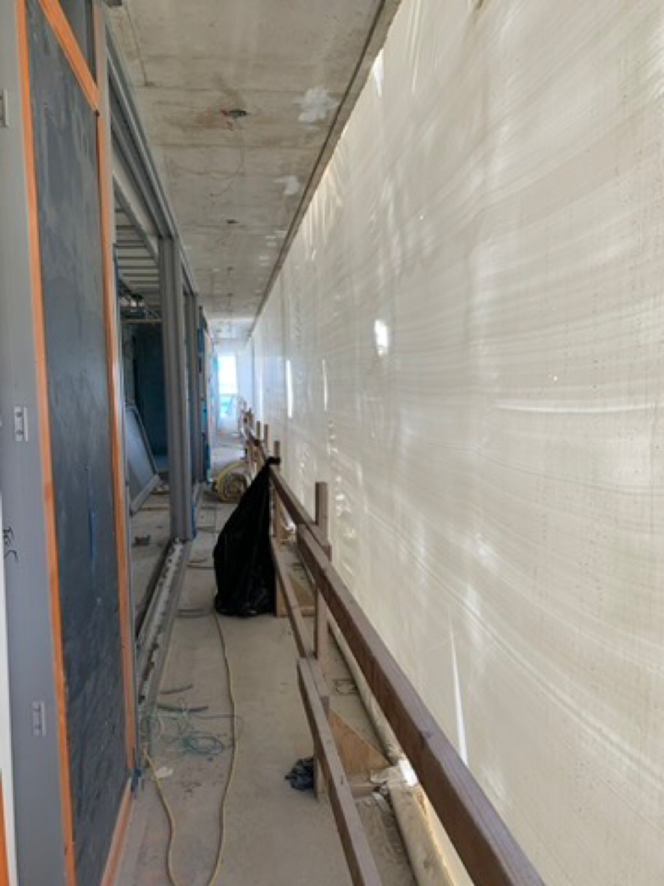
Questions we get after every storm
If your question is urgent, skip the reading. Call 305-434-0444.
They are a stopgap measured in weeks. Consumer blue tarps are UV rated for roughly 90 days, they flap loose in ordinary wind, and every nail used to fasten them puts another hole in your roof. Rebuilds after a major storm routinely take a year or more. We install a heat-welded membrane rated for 24 months, attached without a single penetration.
A heavy industrial film that is tensioned over the damaged roof, heat-shrunk into one continuous drum-tight membrane, and sealed to the structure. No seams to leak, no loose edges to catch wind. Our film is 12 mil thick, Class A fire rated, and manufactured in our own plant.
Our membrane carries a 24-month UV rating and has been wind tested past 150 mph at the International Hurricane Center. Most clients stay sealed from the day of the loss to the day the permanent roof is finished.
Yes. Emergency roof protection is a standard mitigation expense on most property claims. We document the damage and the installation with drone photography and provide the paperwork your adjuster needs.
Everywhere the storm goes. We are based in Miami, Florida and deploy across the United States, Canada, Mexico, Central and South America, and the Caribbean islands. Crews, equipment, and film travel together, so we do not depend on local supply after a disaster.
That is where we are strongest. We have wrapped stadium canopies, industrial plants, condominium towers, churches, and entire campuses, and our construction division encloses open floors on active high-rise projects.
We stage crews and material while a storm is still tracking and roll as soon as roads open. Because we manufacture the film ourselves, there is no waiting on back-ordered material.
Rapid response
Tell us what happened and where. We will scope the cover, quote it, and put your building on the schedule. Storm inbound? Call, we stage crews while it is still tracking.